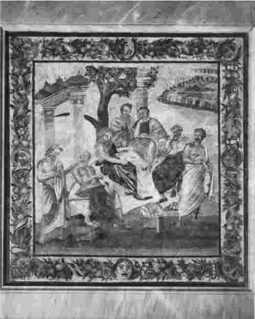
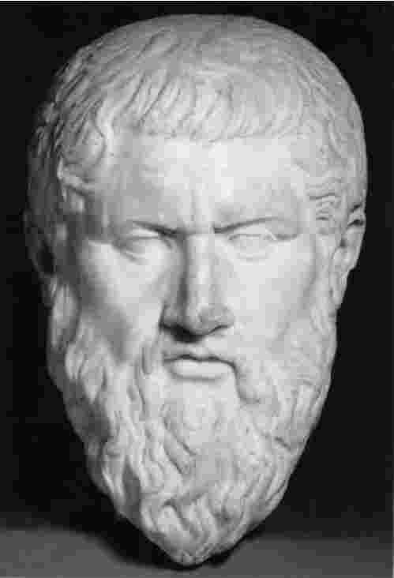

亚里士多德是个不知疲倦的论据收集者——收集有关动物学、天文学、气象学、历史、社会学的论据。他的一些政治研究是在晚年进行的，即从公元前335年到公元前322年，他那时在雅典的吕克昂任教。他的生物学研究大部分完成于云游岁月，即公元前347年到公元前335年。有理由认为他最为频繁地收集论据是在成年时期的第一阶段，即公元前367年至公元前347年之间，这一阶段仍有待叙述。
到目前为止，我们已看到作为一个公众人物、一个无公职的研究者的亚里士多德；但这些至多只算了解一半。毕竟，亚里士多德是以一个哲学家而闻名，就我直至目前所描述的那些饶舌的理论来看，没有什么哲学味道。实际上，亚里士多德的一个古代夙敌就曾指责他只不过是个饶舌的人：
这样的指责夸大其词，并含有一些荒谬的错误：亚里士多德从未对美容术进行过多少研究。不过，这也值得思考。亚里士多德对“政治和农艺学”的研究给人留下深刻的印象，《政制》和《动物研究》都是出色的著作；但它们如何与哲学 有关联呢？
亚里士多德于公元前384年出生在希腊北部城镇斯塔吉拉。很小的时候父亲就死了，由叔叔普洛克西诺养大，叔叔在阿特内斯有亲戚。关于亚里士多德的早期教育，没有记载；但由于出身于富有而又有学识的家庭，他无疑接受了出身良好的希腊人都会受到的文学和体育训练。公元前367年，十七岁的亚里士多德离开斯塔吉拉前往雅典，在那里他加入了柏拉图领导下的学园（Academy），与一群杰出的人一起工作和学习。在一部已遗失的著作中，亚里士多德讲述一个科林斯农夫如何碰巧读到柏拉图的《高尔吉亚篇》，如何“立刻放弃了农场和葡萄树，将灵魂付于柏拉图，在心灵中播种柏拉图的哲学”。这是一个故意编成故事的自传吗？也许年轻的亚里士多德曾在斯塔吉拉读到柏拉图的对话，并被夫人哲学（Dame Philosophy）所吸引。不管事实怎样，到雅典进入学园学习是亚里士多德的研究生涯中关键的事件。
与吕克昂一样，学园也是一个公共场所；而且，柏拉图办的学校并不比亚里士多德的更为先进。不过，这两个机构有些区别。柏拉图在学园附近拥有一片私有土地。他的讲课和讨论通常是不公开的。实际上，柏拉图的学校有些像一个相当排外的俱乐部。在公元前367年，亚里士多德退出了这个团体。
柏拉图本人并非一个博学者。他并不妄称自己拥有他最有名气的学生那样的知识面。相反，他自己的研究或多或少地局限于在我们今天看来专属于哲学的领域——形而上学、知识理论、逻辑学、伦理学、政治理论。学园主要是一个哲学学校。不是因为柏拉图被罩上眼罩，忽略了其他学科。柏拉图鼓励其他人在其他学科中进行研究，他将希腊最有天赋的人都聚集在自己的周围。在学园里，数学肯定是要学的。柏拉图本人不是数学家，却对数学方法十分热衷；他给学生提数学问题并鼓励他们学习数学学科知识。学园里也可能学习自然科学知识。柏拉图的《蒂迈欧篇》包含对科学本质的思考，并且书中一位喜剧作家这样嘲笑学园里的年青人：“在学园这一高级学校里，我听到一些荒谬、奇怪的辩论。他们在讨论自然，区分动物的种类、树木的类别和植物的物种——接着又试图发现南瓜是属于哪个种属的。”柏拉图对分类问题很感兴趣；这些问题对亚里士多德后来进行的生物学分类是有影响的。

图6在庞贝古城发现的一幅镶嵌图案，大约是在公元前100年制作的，图中展示了柏拉图的学园。“学园主要是一个哲学学校……柏拉图鼓励其他人在其他学科中进行研究，他将希腊最有天赋的人都聚集在自己的周围。”
另外，学园还提供了学习修辞学的地方。就是修辞学这个学科让亚里士多德第一次小有名气。公元前360年，他写了篇关于修辞学的对话体文章《格里乐斯》，并在这篇文章中攻击了重要修辞学家、公共教育家和专业批评家伊索克拉底的观点。攻击遭到尖锐的反击，而且这场争论远远超过修辞学理论的领域。伊索克拉底的一个学生瑟菲索多罗斯写了尖锐的长篇反击文章，这只是许多针对亚里士多德的论战文章中的第一篇。（瑟菲索多罗斯指责亚里士多德浪费时间去收集谚语——有证据表明到公元前360年，亚里士多德已开始他的汇编工作。）几年后，亚里士多德在他的文章《劝勉篇》中又再次谈到这场争论，为学园的理念辩护，驳斥伊索克拉底派的实用观点。伊索克拉底本人则在《交换法》中予以了回应。
与伊索克拉底派的论战并不意味着亚里士多德对修辞学本身的排斥，他一直对修辞学感兴趣。（请注意，亚里士多德赞扬伊索克拉底的文学风格时是足够诚实和相当大度的。）他论述《修辞学》的专题论著的初稿与《格里乐斯》和《普罗特里普蒂戈斯》不同，至今还保存完好；那可能是他在柏拉图学园求学初期写的，最后的修改润色则是晚年才完成的。修辞学和文学研究密切相关：亚里士多德写了一本历史批评的书《论诗人》和一本论文集《荷马问题》。这些研究也很可能是在学园期间进行的。这些著作表明，亚里士多德是个在文献学和文学批评方面非常严肃的学者；它们无疑为他的第三本书、关于语言和文体的专题论著《修辞学》以及阐述悲剧之本质的《诗学》作好了部分准备工作。
修辞学也与逻辑有关联——实际上，亚里士多德在《格里乐斯》中的一个主要观点就是，演说者不应使用优美的语言让热情的观众兴奋起来，而应该用完美的论证诉诸理智。柏拉图本人也对逻辑，或者叫做“辨证”，极感兴趣。学园的学者们沉湎于一种智慧训练课程，对给定的论文进行多种程式化的辩论。亚里士多德的《论题篇》就是在学园期间首先开始构思的。该书罗列了提倡年轻辩论者去使用的各种各样的辩论方式，并进行了评论。［希腊语单词topos的一种意义接近于“辩论形式”——于是就有了这个令人好奇的书名，《论题篇》（Topics）。］《论题篇》的一个附录“诡辩术”以目录的形式列举了许多谬论：一些是很愚蠢的，其他的则很深奥，这些辩论者将需要把它们识别出来并进行解析。
亚里士多德作为柏拉图学园中的一员在雅典待了二十年。公元前347年，柏拉图去世，亚里士多德离开雅典前往阿特内斯：他那时三十七岁，凭本身的头衔他是个哲学家和科学家。在这成长的二十年，他学会了什么呢？学园哲学的哪个方面影响了他，并促成了他以后的观点？
他热爱柏拉图，并在柏拉图去世时写了首挽歌称赞他是一个“邪恶的人无权去赞美的人；唯一一个或者说第一个凡人，用自己的一生和辩论课程清晰地证明，一个人可以在成为优秀者的同时获得快乐”。但是人们可以在爱一个人的同时反对他的观点。亚里士多德不是个柏拉图主义者。柏拉图主义的许多核心教义都在亚里士多德的专题论著中受到了强烈的批判；并且亚里士多德终其一生都在批评柏拉图。“柏拉图过去常常称亚里士多德为‘马驹’。这是什么意思呢？众所周知，马驹在吃饱奶后会踢母马。”古代批评家指责这只马驹忘恩负义，但这一指责很荒唐——没有哪个老师要求学生从感恩的角度赞成自己的观点。而且，不管亚里士多德是否接受柏拉图的核心理论，他肯定都深受其影响。我下面选取决定亚里士多德主要哲学思想的五点进行介绍，这五点使他变成一个哲学科学家，而非一个农业信息的收集者。
首先，柏拉图对各学科的统一性进行过思考。他把人类知识看做一个潜在统一的系统：在他看来，科学不是论据的胡乱堆砌，而是将论据组织起来形成对世界的连贯描述。亚里士多德也是一个系统的思想家，他完全同意柏拉图关于科学的统一理论；即便他在如何取得统一以及如何展示统一的方法上与柏拉图意见不同。
第二，柏拉图是个辩证学家。亚里士多德声称自己是逻辑学的先驱；无可争议的是，亚里士多德把逻辑变成了一门科学并创立了形式逻辑这一分支学科——亚里士多德，而非柏拉图，是第一个逻辑学家。但是，柏拉图在他的对话体文章——最显著地体现在《巴门尼德篇》和《智者篇》——和他在学园所鼓励的辩证练习中，都为亚里士多德发展逻辑学准备了基础。他对逻辑的一些基本原则（比如命题的结构）进行了研究；并且他要求学生在辩论实践中进行自我训练。

图7柏拉图的头像，“邪恶的人无权去赞美的人；唯一一个或者说第一个凡人，用自己的一生和辩论课程清晰地证明，一个人可以在成为优秀者的同时获得快乐”。
其三，柏拉图关注本体论的许多问题。（“本体论”是对形而上学的一部分的不实称谓：本体论者试图确定什么样的事物真正存在，构成世界的基本实体是什么。）柏拉图的本体论包含在他的理念理论或形式理论之中。根据该理论，最终的实在，即决定其他所有现实存在的物质，是抽象的一般性。不是单个的人，也不是单个的马——不是汤母、迪克或哈里；不是“萨瑞”、“巴巴利”或“布塞弗拉斯”——而是抽象的人或者说抽象人，以及抽象的马，或者说抽象马，构成真实世界的基本内容。这个理论很难理解，更别说被接受了。亚里士多德没有接受这个理论（一些人认为他没有理解这个理论），却在他的整个哲学生涯中一直受着该理论困扰，并多次（经常是令人丧气地）努力，以建立另外一种本体论学说。
第四，柏拉图认为科学知识就是探询事物的因或解释。在他看来，科学和知识的概念与解释密切相关；他讨论了可能给出的解释的类型以及在什么样的条件下现象可以也应该得到解释。亚里士多德延续了这一努力。他也把知识与解释联系起来。他的科学努力不仅指向观察和记录，而且最主要地指向如何进行解释。
最后一点，知识概念本身也提出了某些哲学问题：认识事物意味着什么？我们如何获得知识，或者说通过何种渠道我们逐渐认识世界？为何实际上我们假定能认识所有事物？解决这些问题的哲学通常被称为认识论（epistêmê是希腊单词，意思是“知识”）。认识论对任何一个关注科学和各种学科知识的人都很重要；认识论理论至少部分地由本体论的一些问题决定。柏拉图对话体文章中有许多段落是讨论认识论的。在这一点上，亚里士多德也追随了老师的足迹。
知识必须是系统的、统一的。知识的结构由逻辑决定，它的统一性最后落脚在本体论上。知识本质上是解释性的。它会提出深层次的哲学问题。所有这些以及其他更多知识都是亚里士多德在学园里学到的。不管与柏拉图在对这五个问题的具体解释方面如何相左，他在总体原则上与柏拉图仍是一致的。在接下来的几章里，我将简要地介绍亚里士多德关于这些问题的观点。在简介结束时，我们就有可能明白为何亚里士多德不仅是个论据的收集者，即为何他是个哲人科学家。